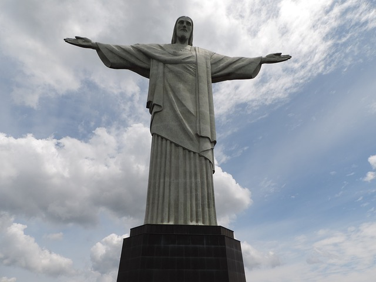

Cristo Redentor

O monumento Cristo Redentor é uma famosa estátua de Jesus Cristo localizada no Rio de Janeiro, no morro do Corcovado. É um símbolo do cristianismo no Brasil que representa paz e amor, com Jesus de braços abertos.
Como chegar?
Você pode chegar até o Cristo Redentor de duas maneiras: com o Trem do Corcovado ou com as vans oficiais Paineiras. É preciso comprar um dos dois ingressos, cujos detalhes variam em preço, ponto de partida e outros fatores que você vai entender melhor seguindo as dicas abaixo.
O que fazer?
Lá no alto do morro onde se encontra o Cristo Redentor é possível ter uma vista privilegiada da lagoa, praias, Maracanã e de toda região Portuária do Rio. No local também tem uma loja de lembrancinhas e decorações para levar de recordação dessa visita.
Horário de funcionamento:
8h às 19h